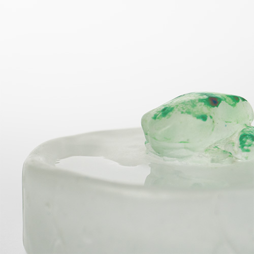
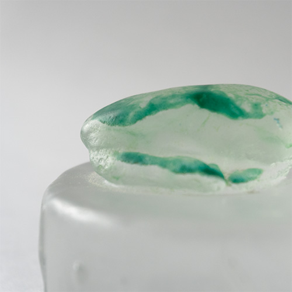

雨の日
ガラス/キャスト
だみだみだみだみだみだみだみだみだみだみだみだみだみだみだみだみだみだみだみだみだみだみだみだみだみだみだみだみだみだみだみだみだみだみだみだみだみだみだみだみだみだみだみだみだみだみだみだみだみだみだみだみだみだみだみだみだみだみだみだみだみだみだみだみだみだみだみだみだみだみだみだみだみだみだみだみだみだみだみだみだみだみだみだみだみだみだみだみだみだみだみだみだみ

